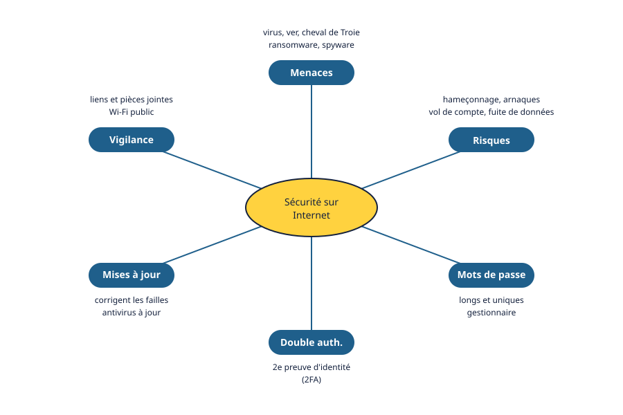

Création de contenu
Sujet choisi : La sécurité sur Internet
| Production | Description | Outils | Lien ou intégration |
|---|---|---|---|
| Avatar parlant | Vidéo de 30 à 60 s, script écrit et relu par moi | HeyGen | Voir l'avatar |
| Montage vidéo | Sous-titres, musique libre de droits, transitions sobres | CapCut | Voir la vidéo |
| Résumé | Résumé structuré, généré puis corrigé | NotebookLM | Voir le résumé |
| Podcast | Épisode audio de quelques minutes | NotebookLM | Écouter le podcast |
| Carte mentale | Concepts clés et liens | NotebookLM, Canva | Voir la carte mentale |
| PowerPoint interactif avec voix | Menu cliquable et narration par diapositive | PowerPoint, Canva, Gamma | Ouvrir le diaporama interactif (voix de synthèse) |
Résumé
La sécurité sur Internet consiste à se protéger contre les logiciels malveillants (virus, vers, chevaux de Troie, ransomwares, spywares) et contre les risques du quotidien : hameçonnage, arnaques, vol de comptes et fuites de données. Les bonnes pratiques sont simples : mots de passe longs et uniques rangés dans un gestionnaire, double authentification, mises à jour régulières, antivirus, vigilance face aux liens et pièces jointes, et prudence sur les Wi-Fi publics.
Carte mentale

Montage vidéo
Vidéo « Sécurité sur Internet » (≈ 2 min).
Avatar parlant
Sécurité Internet : les conseils d'Adem, présentés par un avatar HeyGen à partir d'un script écrit par moi.
Podcast
Épisode audio « Peut-on vraiment devenir un fantôme numérique ? » (≈ 18 min), généré avec NotebookLM à partir de mes sources.
Images, musiques et voix : uniquement libres de droits ou générées. Pas de logiciel piraté.